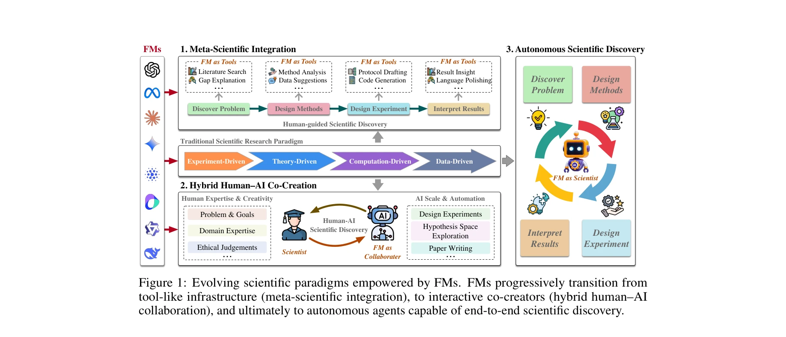

저자: Fan Liu, Jindong Han, Tengfei Lyu, Weijia Zhang, Zhe-Rui Yang, Lu Dai, Cancheng Liu, Hao Liu | 날짜: 2025-10-17 | DOI: 10.48550/arXiv.2510.15280

Figure 1: Evolving scientific paradigms empowered by FMs. FMs progressively transition from
본 논문은 Foundation Models(FMs)이 과학 연구의 기존 방법론을 강화하는 것을 넘어 과학의 패러다임 자체를 전환하고 있다고 주장하며, 메타-과학 통합, 하이브리드 인간-AI 협력, 자율적 과학 발견의 세 단계 프레임워크를 제시한다.
Figure 1: Evolving scientific paradigms empowered by FMs. FMs progressively transition from
Figure 1: Evolving scientific paradigms empowered by FMs. FMs progressively transition from
총평: 본 논문은 FMs의 역할을 패러다임 전환의 촉매로 재정의하는 새로운 개념적 프레임워크를 제시하여 AI와 과학의 관계를 철학적 차원에서 깊이 있게 논의한다. 다만 이러한 주장들이 실제 과학 커뮤니티의 현황과 미래 가능성에 대한 충분한 실증적 근거와 구체적 검증 메커니즘 논의로 뒷받침되어야 할 필요가 있다.